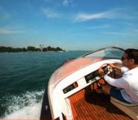

Abdrift - Дрейф: Боковое смещение лодки под действием ветра или течения.
ablandig - береговой ветер: Когда ветер дует с берега на воду. (Противоположность: onshore — auflandig)
Abrisskante - Редан: Острая кромка между транцем и днищем лодки, предотвращающая подъем воды по транцу и образование тормозящего разрежения.
achteraus - позади: Всё, что находится позади лодки. (Противоположность: впереди)
Achterleine - кормовой швартов: Швартовый конец, идущий от кормы лодки назад к берегу или к столбу. Иногда называется кормовым концом. (Противоположность: носовой конец)
Achterschiff - корма: Задняя часть лодки (противоположность: носовая часть)
auffieren - травить конец: Ослаблять натяжение каната, не давая ему свободно выбегать. Часто просто: травить.
aufkommen - догнать: Догнать идущее впереди судно.
auflandig - наветренный к берегу: Когда ветер дует с воды на берег.
aufschießen - укладывать конец бухтами: Складывать канат равномерными бухтами.
Auge - рым, петля: Общее обозначение различных колец, проушин или петель (например, буксировочное кольцо).
ausbrechen - вырывать якорь: Якорь вырывается из грунта.
Backbord - левый борт: При движении вперед — левая сторона лодки.
Back‑to‑Back‑Sitze - сиденья «спина к спине»: Мягкие сиденья, установленные спинками друг к другу, которые на направляющих могут раскладываться в лежак.
Bake - бакен: Навигационный знак, установленный на берегу.
bekneifen - зажать: Зажать или заклинить канат.
Bergfahrt - движение вверх по течению: На реках — движение от устья к истоку. (Противоположность: движение вниз по течению)
Bilge - трюм: Пространство в днище лодки между килем и полом. Часто там устанавливаются баки.
Bord - борт: Первоначально сторона судна (левый или правый борт). Отсюда выражения «за бортом», «на борту».
Bucht - бухта: Петля каната.
Bug - нос: Передняя часть судна.
Bugspriet - бушприт: Конструкция, выступающая вперед от носа для крепления якоря.
Cockpit - кокпит: Открытое пространство моторной лодки.
Davit - давит: Небольшой поворотный кран для якоря или шлюпки.
Deck - палуба: Верхняя поверхность корпуса лодки.
Deckpeilung - палубный пеленг: Когда два или более объекта находятся на одной линии наблюдения, образуя линию положения на карте.
Decksalon - палубный салон: Жилое помещение на палубе, часто совмещённое с постом управления.
DMYV - Немецкий союз моторных яхт: Основан в 1907 году; объединение немецких моторных клубов и высший орган моторного спорта Германии.
Dinette - динетта: Расположение скамей по обе стороны стола; часто может трансформироваться в двуспальное место.
dwars - траверз: Направление строго поперёк курса.
Fahrrinne - судовой ход: Самая глубокая часть фарватера, обозначенная буями или знаками.
Fahrwasser - фарватер: Часть водного пути, пригодная для судоходства.
Fender - кранец: Защитный амортизатор для защиты борта от повреждений.
Festmacher - швартов: Канат, используемый для швартовки.
Finish - финишная отделка: Термин из судостроения из пластика; обозначает качество наружного покрытия и общей обработки лодки.
Flybridge - флайбридж: Открытый верхний пост управления на крыше каюты.
Freiboerd - надводный борт: Высота борта над ватерлинией.
GFK - стеклопластик: Основной материал современных моторных лодок.
Hahnepot - развилка каната: Разветвление каната, распределяющее нагрузку на две точки.
Havarie - авария: Повреждение судна из‑за посадки на мель, столкновения, шторма или отказа двигателя.
Heck - корма: Задняя часть судна.
Heckplattform - кормовая платформа: Платформа на корме с лестницей для выхода из воды; часто используется как купальная платформа.
Kabbelwasser - кабельная волна: Нерегулярное волнение, возникающее от проходящих судов.
Kajüte - каюта: Закрытое жилое помещение на борту.
Kimm - кимм: 1. Морское название горизонта. 2. Место на корпусе с наибольшей кривизной.
Kimmstringer - кимм-стрингер: Продольное усиление корпуса на линии кимма.
Kinken - перекрут каната: Скручивание каната.
Klampe - кнехт: Двухрожковый уток для крепления швартовых концов.
Kluse - клюз: Отверстие в борту для проведения канатов или якорной цепи.
Knickspanter - клинкерный корпус: Корпус с угловатым поперечным сечением.
Knoten - узел: Морская единица скорости — морские мили в час.
Kollision - столкновение: Столкновение судов или объектов.
Kollisionskurs - курс столкновения: Курс, который неизбежно приведёт к столкновению.
Krängung - крен: Наклон лодки на бок.
Kreuzsee - крестовое волнение: Волны, идущие в разных направлениях.
Kurs - курс: Направление движения лодки.
Lee - подветренная сторона: Сторона, защищённая от ветра. (Противоположность: Luv)
lenzen - откачивать воду: Откачивать воду из лодки; также — идти по ветру перед сильным волнением.
Lippe - клюз‑губа: Крюкообразное устройство для проводки канатов.
Log - лаг: Прибор для измерения скорости.
Lot - лот: Прибор для измерения глубины.
Luv - наветренная сторона: Сторона, обращённая к ветру.
Manöver - манёвр: Любое действие, изменяющее движение лодки.
Motorwanne - моторная ниша: Углубление на корме лодки для подвесного мотора.
Mooring - муринг: Способ швартовки в открытой воде, обычно к буйному якорю.
Niedergang - трап в каюту: Вход и лестница в каюту.
Ösfass - черпак: Ёмкость для вычерпывания воды.
Pantry - камбуз: Кухонная зона на лодке.
Persenning - тент: Водонепроницаемый чехол для лодки или кокпита.
Poller - швартовая тумба: Короткий массивный столб для крепления швартовных концов.
pullen - грести: Морское обозначение гребли.
Ruder - руль: Управляющее устройство судна.
Ruderblatt - рулевое перо: Подводная часть руля.
Ruderlagenanzeige - индикатор положения руля: Прибор, показывающий положение руля.
Rundspanter - круглоскулый корпус: Корпус с округлым поперечным сечением.
Schanzkleid - фальшборт: Надстройка борта над палубой.
schlieren - якорь волочится: Якорь не держит и тянется по дну.
Schott - переборка: Поперечная водонепроницаемая перегородка.
Schwell - портовая зыбь: Слабое волнение в гавани.
schwojen - рыскать на якоре: Повороты лодки вокруг якоря под действием ветра или течения.
Seeventil - забортный клапан: Кран на трубопроводах, проходящих через корпус.
slippen - спускать лодку: Спускать лодку на воду по слипу.
Spiegel - транец: Задняя стенка корпуса лодки.
Spill - шпиль: Лебёдка для подъёма канатов или якоря.
Spring - спринг: Дополнительный швартов, препятствующий продольному движению лодки.
Stander - клубный флаг: Короткий треугольный флаг.
Steuerbord - правый борт: Правая сторона лодки по ходу движения.
Steven - штевень: Переднее и заднее окончание корпуса.
Stringer - стрингер: Продольное усиление корпуса.
Talfahrt - движение вниз по течению: Плавание от истока к устью.
Topp - топ мачты: Верхняя точка мачты.
Toppzeichen - топовый знак: Знаки на буях или бакенах.
Törn - поход: Длительное плавание на лодке.
Trailer - трейлер: Прицеп для перевозки лодки.
trimmen - триммирование: Действия для улучшения скорости и поведения лодки.
Trimmflosse - трим‑пластина: Регулируемая пластина для компенсации боковой тяги винта.
Verdrängung - водоизмещение: Вес лодки, равный весу вытесненной воды.
verholen - перешвартовать: Переместить лодку на другое место с помощью канатов.
Vorluk - носовой люк: Закрывающийся люк на носовой палубе.
Vorschiff - носовая часть: Часть лодки перед каютой.
Wegerung - внутренняя обшивка: Внутренняя облицовка бортов для изоляции и усиления.
Швартовка к бую 59 — со стороны течения 58 — против течения 60
Ахтеркаюта 37 Кормовой конец 33,77 Кормовой спринг 33,77
Типы якорей 72
Bruce 72
CQR 72
Danforth 72 Fisherman 72 Patent 72
Вес якоря 72 Якорный канат 73 Якорная цепь 75 Якорная стоянка 23
ATIS 27
Подвесной мотор 42
Правила расхождения 14
Сиденья Back‑to‑Back 35,36
Купальная лестница 18
Аккумулятор 52
Шкала Бофорта 81
Фарватер 17
Кранец 33
Пожаротушение 55
Огнетушитель 54
Флагшток 28
Flybridge 37
Глиссер 38
Кабельная волна 69
Каюта 37
Узел 31
Столкновение 79
Крестовое волнение 69
Лаг 38
Человек за бортом 65
Двигатели 41
Подвесной мотор 42
Моторная яхта 37
Тумба швартовая 33
Радарный отражатель 53
Спасательные жилеты 52
Шлюз 70
Спринг 33
Штевень 35
Трим‑пластина 42
Фарватерные знаки 17
V‑образное днище 39
Водоизмещающий корпус 38
Носовой конец 33
Виндсёрфинг и водные лыжи 78
ПРАВА СУДОВОДИТЕЛЯ — ОБУЧЕНИЕ ОНЛАЙН
Вы сами решаете, когда и где учиться. Официальные экзаменационные вопросы и учебные материалы доступны онлайн в любое время.
www.bootsfuehrerschein-portal.de
Права судоводителя маломерного судна
Внутренние воды
Каждый, кто хочет управлять моторной лодкой на внутренних водных путях Германии, должен иметь этот установленный законом документ.
Эта книга содержит полный учебный и экзаменационный материал для подготовки к экзамену, официальный каталог экзаменационных вопросов и ответы на них. Кроме того, приведены советы по управлению моторными лодками.
Она предоставляет отличную возможность тщательно подготовиться к экзамену и получить практические знания в концентрированной форме.
Учебник построен по дидактическим принципам, написан наглядно и понятно и содержит более 100 фотографий и иллюстраций.
